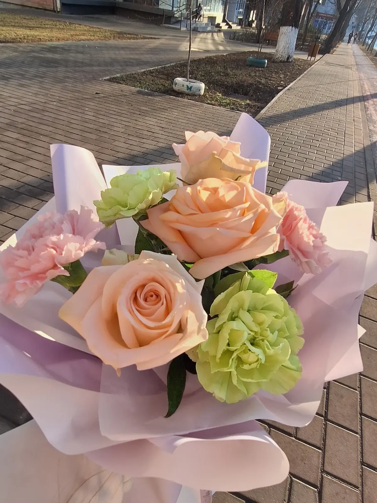
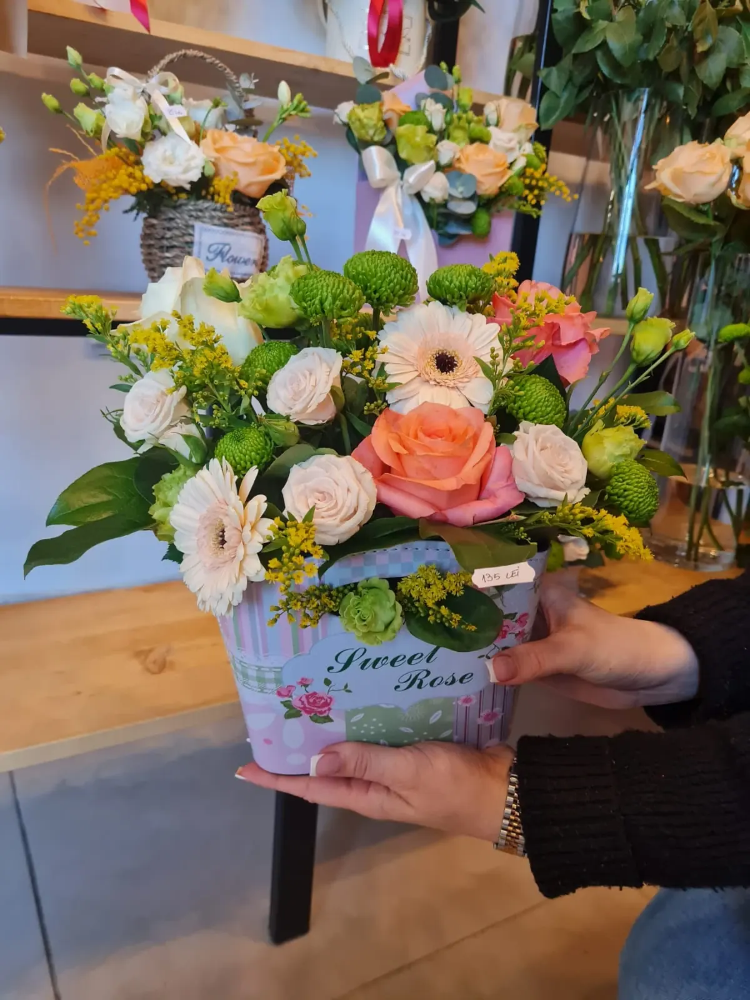
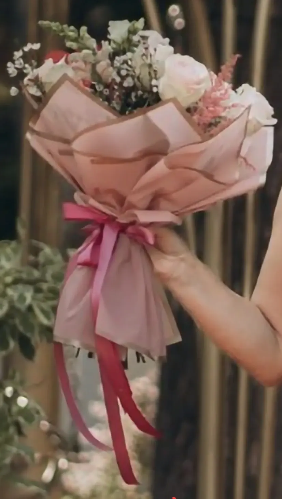
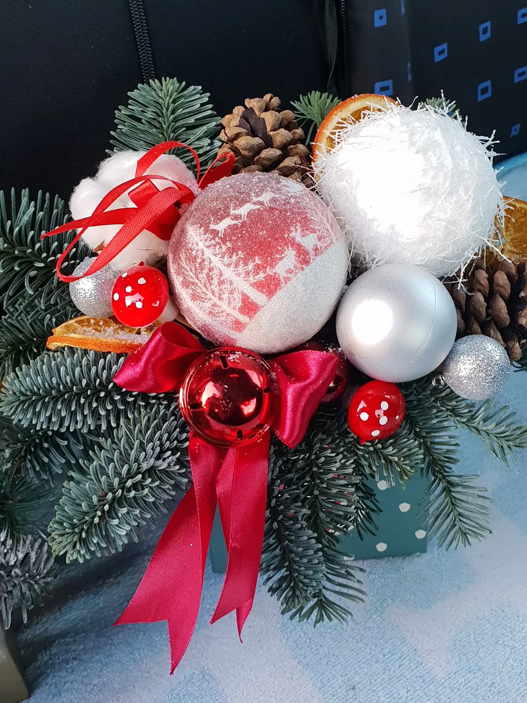
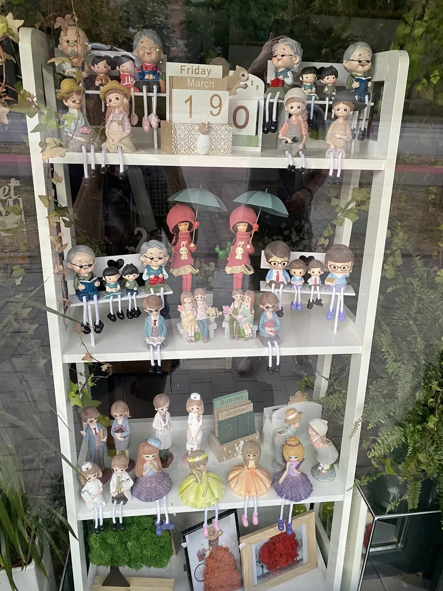
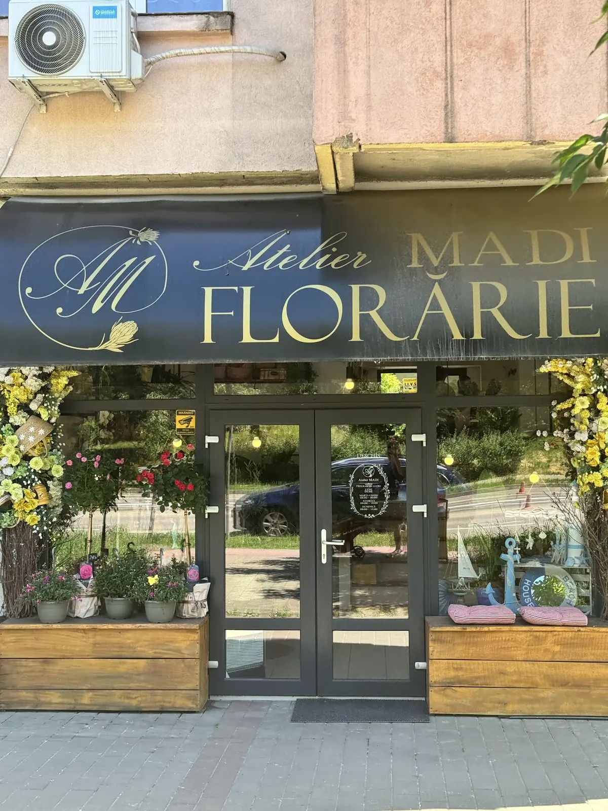
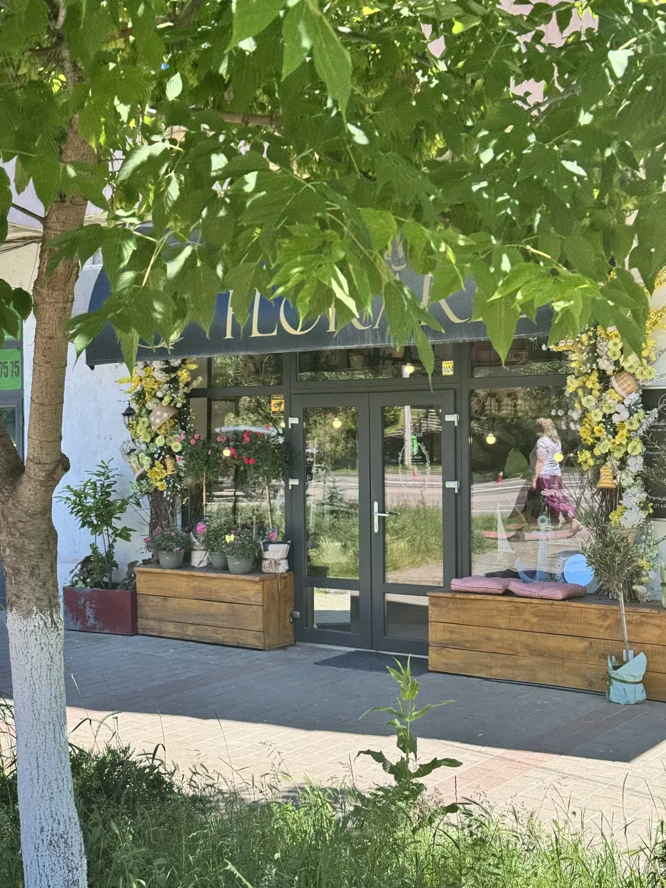

Atelier MADI · {{florărie, Nicolina 15|florist, Nicolina 15|florista, Nicolina 15}}{{Buchetul tău, legat de mână.|Your bouquet, tied by hand.|O seu ramo, atado à mão.}}
{{Spui ocazia și culorile, iar buchetul se compune după cerințele tale și se leagă la sfârșit cu funda. Pentru o zi de naștere, pentru un „mulțumesc”, sau doar așa.|Tell us the occasion and the colours; the bouquet is put together the way you ask and finished with a ribbon. For a birthday, a thank-you, or just because.|Diga a ocasião e as cores; o ramo é composto como pede e fechado com o laço no fim. Para um aniversário, um «obrigado», ou só porque sim.}}



{{comandă un buchet|order a bouquet|encomendar um ramo}}
{{Compune-l aici, îl legăm în atelier.|Compose it here, we tie it in the shop.|Componha-o aqui, atamo-lo no atelier.}}
{{Alegi ce știi, lași restul floristei. Comanda pleacă scrisă, prin WhatsApp sau SMS, iar atelierul îți confirmă prețul și ora. Fiecare pas făcut mai înfășoară o dată funda.|Pick what you know and leave the rest to the florist. The order goes out written, by WhatsApp or SMS, and the shop confirms the price and time. Every step you complete wraps the ribbon once more.|Escolha o que sabe e deixe o resto à florista. O pedido sai escrito, por WhatsApp ou SMS, e o atelier confirma o preço e a hora. Cada passo feito dá mais uma volta ao laço.}}
{{atelierul|the shop|o atelier}}
{{Sub firma bleumarin de pe Nicolina 15.|Under the navy sign on Nicolina 15.|Debaixo da tabuleta azul-marinho da Nicolina 15.}}
{{Buchete în hârtie cu fundă de satin, cutii cu flori, aranjamente de sezon și, în vitrină, un raft întreg de figurine. Fotografiile sunt din atelier.|Bouquets in paper with satin ribbons, flower boxes, seasonal arrangements and, in the window, a whole shelf of figurines. The photos are from the shop.|Ramos em papel com laço de cetim, caixas de flores, arranjos da época e, na montra, uma prateleira inteira de figuras. As fotos são do atelier.}}



{{Îți compui buchetul așa cum ți-l dorești, pentru ocaziile importante.|You build the bouquet exactly as you want it, for the occasions that matter.|Compõe o ramo como quiser, para as ocasiões que contam.}}
Irina A. · Local Guide{{Buchete foarte drăguțe și oameni prietenoși.|Lovely bouquets and friendly people.|Ramos muito bonitos e pessoal simpático.}}
Corina M.{{Atenție la detalii și delicatețe: buchețelul făcut exact după cerințe.|Attention to detail and a delicate touch: the little bouquet made exactly as asked.|Atenção ao detalhe e delicadeza: o raminho feito exatamente como pedido.}}
Adelina A.
{{Pe scurt, din recenziile publice de pe Google.|In short, from the public reviews on Google.|Em resumo, das avaliações públicas no Google.}}
{{program și contact|hours and contact|horário e contactos}}
{{Șoseaua Nicolina 15, Iași.|Șoseaua Nicolina 15, Iași.|Șoseaua Nicolina 15, Iași.}}
Atelier MADI
Șos. Nicolina 15, 700722 Iași
{{Clienții pomenesc și un atelier MADI în Valea Adâncă; adresa lui: de confirmat|Customers also mention an Atelier MADI in Valea Adâncă; its address: to be confirmed|Os clientes falam também de um Atelier MADI em Valea Adâncă; a morada: a confirmar}}
{{Deschide în Google Maps|Open in Google Maps|Abrir no Google Maps}}
{{Cod Plus: 4HQG+3V Iași|Plus Code: 4HQG+3V Iași|Plus Code: 4HQG+3V Iași}}
